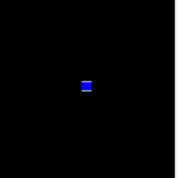

はじめに
- ゲームでは、指定した方向にオブジェクトを移動させるという処理をしたい場合が結構あると思います。
- 今回は、画面の中央点からタッチした点に向けてオブジェクトを移動させる処理について、現時点で自分なりにスッキリ書けていると思っているコードを紹介します。

移動方向を方向ベクトルで求める
- 数学の話にはなりますが、例えば、点Aから点Bへ向かってオブジェクトを移動させたい場合は、AからBへの方向ベクトル を求めます。
- 方向ベクトルは、点Bと点Aの(x、y)座標のそれぞれの差になります。
- A(3,4) B(5,6)の場合、AからBへの方向ベクトルはB-Aですので、V(2,2)となります。
phina.geom.Vector2クラスを活用する
- phina.js には、phina.geom.Vector2 というベクトルを扱う便利なクラスがあらかじめ用意されています。
- 今回は Vector2.sub というベクトルの差を求めるメソッドを使います。
コード実装
// 画面がタッチされた時
onpointstart: function(e) {
// 画面中心座標の位置ベクトル
var center = Vector2(320, 480);
// 弾
var bullet = CircleShape({
radius: 8,
}).addChildTo(this.bulletGroup);
// 位置ベクトルを代入
bullet.position = center;
// タッチされた座標の位置ベクトル
var to = Vector2(e.pointer.x, e.pointer.y);
// 方向ベクトル計算
var vec = Vector2.sub(to, center);
// 正規化して速度を一定にする
var v = vec.normalize().mul(10);
// Physicalクラスの移動ベクトルに代入する
bullet.physical.velocity = v;
},
- ベクトルを扱うためには、座標値をVector2クラスのオブジェクトにする必要があります。
- Shape クラスなどの position プロパティは Vector2 型なので、そのまま代入できます。
- タッチされた座標を同じく Vector2 にして、sub メソッドで方向ベクトルを計算しています。
- そのままだと速度にバラツキが生じるので、normalize メソッドでベクトルを正規化してから mul メソッドで速度を乗じています。
- 最後に、移動ベクトルを Physical クラスの velocity プロパティに代入することで、オブジェクトを移動させています。
ソースコード全体
// グローバルに展開
phina.globalize();
/*
* メインシーン
*/
phina.define("MainScene", {
// 継承
superClass: 'DisplayScene',
// 初期化
init: function() {
// 親クラス初期化
this.superInit();
// 背景色
this.backgroundColor = 'black';
// オブジェクトグループ
this.bulletGroup = DisplayElement().addChildTo(this);
// 矩形
RectangleShape({
width: 32,
height: 32,
}).addChildTo(this).setPosition(320, 480);
},
// 画面がタッチされた時
onpointstart: function(e) {
// 画面中心座標の位置ベクトル
var center = Vector2(320, 480);
// 弾
var bullet = CircleShape({
radius: 8,
}).addChildTo(this.bulletGroup);
// 位置ベクトルを代入
bullet.position = center;
// タッチされた座標の位置ベクトル
var to = Vector2(e.pointer.x, e.pointer.y);
// 方向ベクトル計算
var vec = Vector2.sub(to, center);
// 正規化して速度を一定にする
var v = vec.normalize().mul(10);
// Physicalクラスの移動ベクトルに代入する
bullet.physical.velocity = v;
},
// 毎フレーム更新処理
update: function() {
// 弾が画面外に出たら削除
this.bulletGroup.children.eraseIfAll(function(bullet) {
if (bullet.x < 0 || bullet.x > 640 || bullet.y < 0 || bullet.y > 960) {
return true;
}
});
},
});
/*
* メイン処理
*/
phina.main(function() {
// アプリケーションを生成
var app = GameApp({
// MainScene から開始
startLabel: 'main',
});
// fps表示
//app.enableStats();
// 実行
app.run();
});